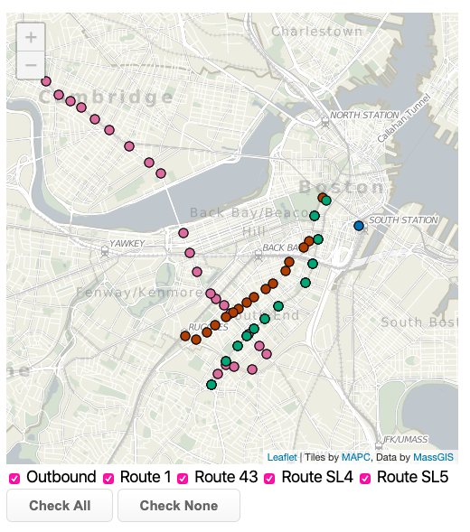
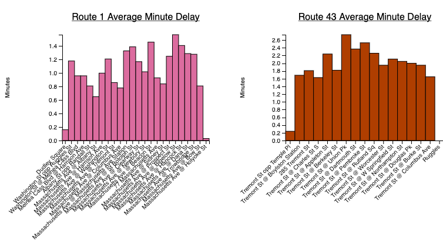
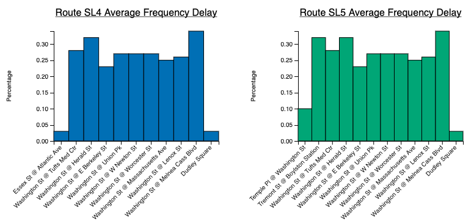

Breanna Madison, Andrew Carlson, Mihir Patil
Service-Learning Course Project as part of DS 4200: Information Presentation and Visualization, taught by Prof. Cody Dunne, Data Visualization @ Khoury, Northeastern University.
The Chester Square Neighborhood Association is set on providing its residents with the best living environment and community possible. Located on Massachusetts Avenue, the community and its park are split by one of the busiest roadways in Boston. The park is a gorgeous green-space for the people of Boston, primarily those in the greater Chester Square area. Luckily for residents, there are four major buses that trek through the area: silver lines 4 and 5 and bus routes 1 and 43. It goes without saying that many Bostonians have come to expect delays taking the MBTA. With this in mind, and new capital projects in the city’s pipeline, such as the Boston Bus Rapid Transit (BRT), we aim to examine the reliability of the four buses which allow the citizens of Boston to venture to and from this park..
Our team anticipates finding that the buses running through this park (Silver Line 4, Silver Line 5, Route 1, and Route 43) experience many delays, especially during rush hour. We hope to be wrong in this assumption, but if it is true, we expect to have a good justification for the Boston Bus Rapid Transit (BRT). Using the scheduled and predicted times of bus departure obtained from the MBTA V3 API, we can gain an understanding of the magnitude of the delay and reliability problem.
Embedded MP4 demo video using the HTML5 <video> tag. For example, this screen recording Prof. Cody Dunne made of Mike Bostock's flexible transitions in D3 slide:
Final visualization screenshots (PNG images), design justifications,
UI walk-through, and linked presentation slides.



In this visualization, we utilized a map and bar chart visualizations
to show the data we collected. The map was the best design choice for
us as the data for stops are organized with longitude and latitude
data. We used the stopID data points to link to our bar charts. We
used bar charts since the delay data points are quantitative and are
most effectively communicated through position. Additionally, color
encodings seperate the stops (pink for route 1, orange for route 43,
blue for SL 4, and green for SL 5). This allows users to quickly
recognize the stops they are viewing. We visualized the linking of
data points through highlighting since it will be easy for users to
recognize the connection between points. We have two sets of bar
charts: one for the average delay in minutes, and the other for the
average frequency of delays per stop and route.
Presentation Slides
Our data was pulled from the V3 API owned and operated by the MBTA. This data source has many offered datasets, but for our assignment, we utilized the Stops, Schedules, Predictions, and Trips datasets. All of these datasets were collected as JSONs, however, the JSONs were inconsistent in structure from one another and overall messy in form. Because of this, our first task was to develop a JSON parsing tool in order to extract the data values we needed for the project. For Stops, we collected the name (string), latitude (float), longitude (float), stop_id (string). For trips, we extracted trip_id (int) and route_id (int). From the Schedules dataset, we grabbed the departure_time (string), direction_id (int), stop_sequence (int), schedule_id (string), route_id (int), stop_id (string), and trip_id (int). From the Predictions dataset, we extracted the departure_time (string), direction_id (int), stop_sequence (int), schedule_id (string), route_id (int), stop_id (string), vehicle_id (string), and trip_id (int). When buses were at the last stop on their trip, they had no departure time. In these situations, we imputed the null cases with the arrival times. Also, the direction_id was a boolean value with 1 representing inbound trips and 0 representing outbound trips. All of the time series data was stored in an unfamiliar format (Ex: “2019-11-15T22:21:06-05:00” which lists the date, time, and timezone), so we used Excel to break down these data points into more useful hh:mm:ss data types. In doing so, we could simply subtract the scheduled time from the predicted time to generate the time difference between the two values. Our data was pulled from one day (Friday, November 15th, 2019) due to the fact that prediction data is only stored for approximately the next hour and a half requiring us to complete manual pulls in these intervals. Additionally, past prediction data is not stored, and thus, could not be pulled from the API. We took the day’s worth of data and aggregated it in order to generate the average delay and frequency of delay data points, which we stored alongside the Stops dataset. Our data used in the visualization was a mix of JSON and CSV files due to the processing power of JSONs and the ease of use of CSV files for end-users.
Our project aimed to tackle three main tasks. The first task was to have a mechanism for users to find relevant bus routes for them to navigate to and from the Chester Square Park. We achieved this in our map visualization, checkboxes, and tooltips which allow users to identify and locate the stop closest to their home. Secondly, we wanted users to understand the reliability of the stops/routes they personally interact with. This was done via our bar charts which are organized by route allowing users to focus on the delay data which directly affects their travel by comparing the predicted values and the scheduled values for the departure times at each stop. Finally, we wanted to give insight into the overall reliability status of the buses which affect the visitors of Chester Square Park by building bar charts detailing the frequency of delays and the severity of said delays for each of the bus stops. These insights can be used when advocating for future capital projects which aim to ameliorate the delay issues, such as the Boston BRT. All of these tasks are enhanced via our brushing and linking functionalities which enable users to subset and highlight the data they want/need to see.
In the beginning, we wanted to visualize three maps: one for the actual location of buses, one for the scheduled location of buses, and one for the predicted location of buses. This became an issue for viewers since they would have to track where each bus is along its ride and really did not provide a lot of analysis into the true subject matter of our project; how do the different bus routes perform in terms of reliability? Also, we ran into an issue with the data. We wanted to use logged data on a weekly basis, however, the data for MBTA predictions refreshes approximately every 90 minutes for prediction values. Because of this, we went for a more static dataset. We also considered including all of the bars within the same bar chart, but because of possible occlusion, we decided to opt for multiple bar charts. During the design process, we wanted to include brushing and linking over a zoomable map. Since brushing and linking requires the mouse events, we decided to opt for a static map because we felt it was more important for users to have brushing and linking functionality rather than zooming capabilities on the map.
Overall, we were able to see that the buses of Chester Square Park are not nearly as reliable as they could be. For example, the Route 43 bus was late 81% of the time when heading inbound or outbound from the Tremont S/ Ruggles St stop. Even though the delays were minimal, typically only a couple minutes, there were many instances where riders experienced delays of over ten minutes. Of course, there are issues that arrive every day with transit, but regardless, there could be a case for increased development in this area. Because of this, we do see a real case for the BRT as it may increase reliability in travel, especially for those coming from a location that’s far away. We faced many difficulties in this project including a complex API and a new library (D3), but we were able to combine our wide variety of skills to ultimately create an interactive project.
We would love to expand this project to all of the MBTA eventually as we feel the discussion about the discrepancies between the scheduled and predicted times is one which all riders, regardless of route, could benefit from. We ultimately would like to build a tool for a wider audience so that all areas of the city could have a use case for confronting the city of Boston with their own transit-related issues. Additionally, we could build more tools pertaining to the Chester Square buses, such as schedule visualizations, so that riders could have an aid in visualizing the patterns of the time series data.
List here where any code, packages/libraries, text, images, designs, etc. that you leverage come from.